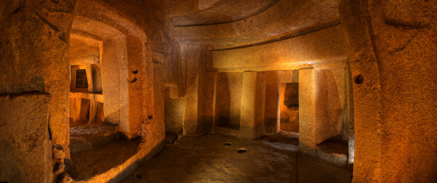
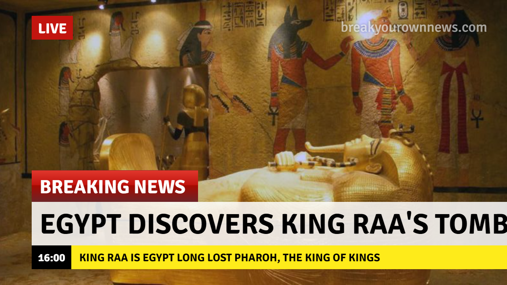
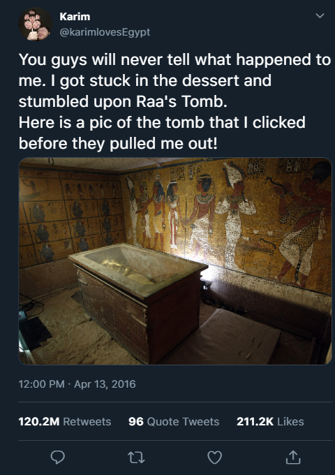
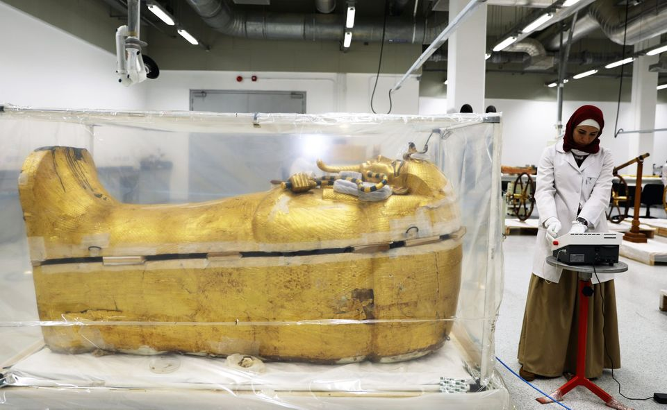
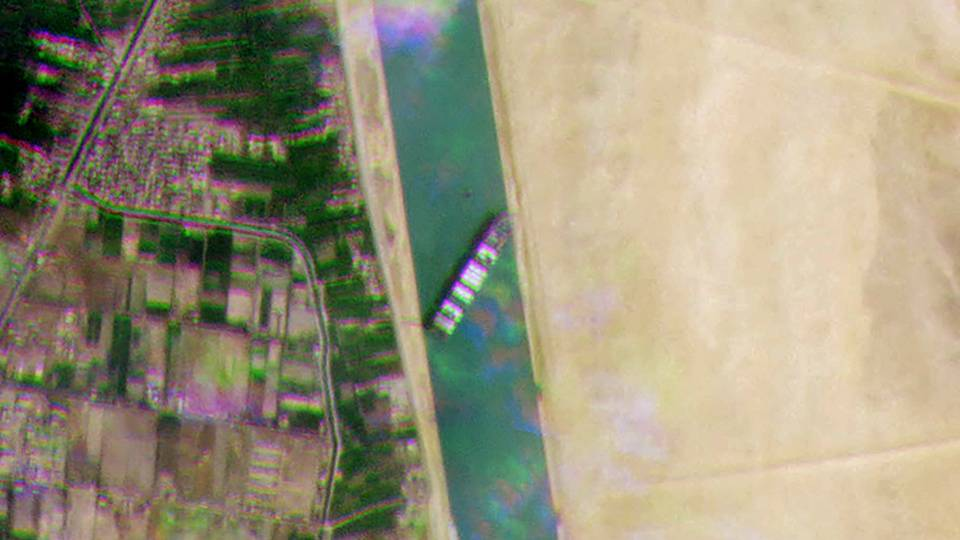
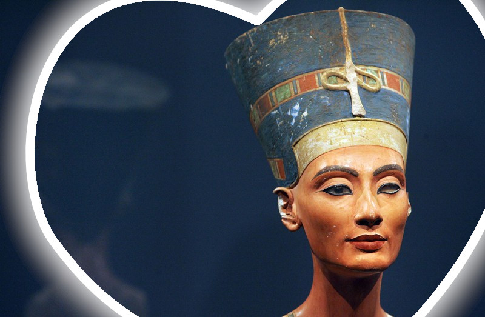

-
April 12, 2016
For days now, I have been travelling all alone through the malevolent deserts of Egypt. I know what you are thinking. Is he stupid? How dumb can he be to be alone in a desert? I promise you, I don’t know how this happened. I was a part of a small expedition group that scoured the Saqaraa dessert looking for the "Vally of Kings." Ever since I was a kid, I always wanted to visit Egypt. I fell in love with Egyptian history while watching the mummy cartoon on Nickelodeon. If you think Greek mythology is fascinating, just wait until you hear about the mythical Egyptian Pharoah gods. And what is better than experiencing it firsthand?
We were doing our thing, walking in a horizontal pattern, trying our best not to leave a spot unexplored. And suddenly, out of the blue, a sandstorm the size of the Empire State Building rushed towards our group. Our guide suddenly starts screaming in Arabic some words I didn’t understand. My first instinct is to run away and hide behind a stone. Oh boy, was I wrong!
I hold my breath, look around me for the nearest stone and start running as fast as I can. Stupid me, thinking that a mere stone could shield this mammoth of a storm. Minutes pass by and I slowly start to think I made it, but suddenly, everything turns pitch black.
After what seemed to be a couple of hours, I wake up with the sun bleaching my body and the sand literally gnawing into my skin. I stand up and look around me, hoping to find my team.
I see no one. Literally no one.
I don’t know what to do. My body and mind are not ready for this. I start to panic and walk around in circles. Who knows, maybe God loves me today and I might come across a Bedouin tribe?
After walking a couple of hours, I stumbled upon a strange underground colossal structure. I knew it! I found a burial chamber! For a second, I forget about being stuck in a desert and just stand there, admiring the spectacular view. I tiptoe inside, making sure I don’t accidentally push or hit anything. Pharoah burial sites are well-known for having intricate death traps designed to deter intruders.
“BOOM.” A door opens and I look to my left to witness the most beautiful king tomb I have ever seen.
-
April 13, 2016
Breaking news
CNN: A university student got lost in the desert and stumbled upon the missing tomb of Raa king of the kings. The desert rangers have saved the student and are now exploring the burial temple
-
April 14, 2016
Twitter going crazy
Karim, the student who got lost in the Egyptian desert, becomes an internet sensation. His Twitter post reaches 120.2M retweets and 211.2k likes
-
April 20, 2016
Omar, the chief Egyptologist in the Ministry of Archeology, summoned his team of brilliant experts and ordered them to relocate Raa’s tomb to the Grand National Museum in Alexandria.
Everyone was thrilled and agreed with the decision. However, Sherif, the lead Egyptologist, was concerned. If you have ever met Sherif, you would know right away why he would do that. Sherif is the kind of guy who would avoid a black cat while going back home, never saunter under any stairs, and never come close to the number 13. He is probably the most superstitious man in Egypt.
He was nervous because of the monstrous stele that was found next to Raa’s magnificent tomb. The stele was full of dust, spider webs, mold, and blood markings. If you are not familiar with Egyptian mythology, blood markings are placed on cursed tombs. It is said that whoever touches these markings is doomed. Nonetheless, Sherif spent hours carefully doing his magic and was able to restore the stele to its glory days. Unfortunately, it wasn’t at all good news.
“I, Raa. King of the Kings. Warrior of the Nile. Leader of the underworld. Hereby declare that I will bestow my relentless wrath on anyone who disturbs my sleep. Children of the Nile, if the lustrous sun stops shinning and I am not at my glorious home, I will destroy you and your dreams,” read the ancient stele.
The Chief did not listen to Sherif’s concern and aggressively demanded a hasty transport and restoration. Reluctantly, Sherif complied and worked tirelessly for weeks to fulfil his demands. Little did he or any of his team know what was going to happen.
Egypt was beaming with happiness when news of the move was made public. Raa was the only missing king from the 3rd dynasty that saved Egypt from the Meroë’s invasion. So, you can probably tell he was one of their favorite war general pharaohs.
When the ministry noticed how ecstatic the Egyptians were, they decided to create a nationwide massive event where Raa’s body would visit every city. They called the event “The Golden Parade.”
Thousands of Egyptians took it to the street alongside hundreds of the countries musicians, and everyone was going crazy over Raa’s mummified body.While everyone was celebrating, Sherif was stuck in his dark and gloomy Cairo apartment, trying to decode what, “If the lustrous sun stops shinning,” meant. “Sun stops shinning. Hmmm... Does Raa mean at night? But we moved his body weeks ago and we are all fine. Hmmm… Is this stele a lie?” “Oh God, don’t tell me…” “It’s talking about a solar eclipse.”
Sherif quickly googled when the next solar eclipse is. Surprisingly, it turns out to be in 12 days. He hastily opened his work laptop, typed out all his alarming conclusions, and sent it to everyone he knows. No one believed Sherif, but Sherif did not care. He started packing his stuff and looked for the cheapest flight out of Egypt.
-
April 20, 2016
Raa's tomb arrives safely to the Grand National Museum of Egypt
ALEXANDRIA NEWS: Specialists at the museum have successfully restored Raa’s tomb and have uncovered a layer of gold below the limestone.
-
12 days have passed
-
May 2, 2016
Egypt experiences its first solar eclipse in years
-
May 6, 2016
Is the Nile river loosing its water?

REUTERS: Researchers at the University of Cairo have noticed a sharp increase in the Nile's water content. They believe that on average around 10m cubic centiliters are lost on daily basis. At this rate, the Nile will lose all its water in 5 months
-
May 12, 2016
Suez Canal Blocked
THE GUARDIAN: A massive container the size of the empire state building is blocking the Suez canal. Officials predict that Egypt is going to lose millions of dollars if they are unable to refloat it soon
-
May 20, 2016
Weird disease is spreading in Egypt
EGYPT NEWS: A weird disease called COEGY-16 is spreading among the population. Egypt is slumbering into chaos as officials are trying to control the situation
-
May 23, 2016
Egypt is slumbered with unexplained chaos. Could it be the curse of Raa? Or is it just pure unexpected coincidence? The president is running out of ideas. Someone in the ministry got hold of Sherif’s report and conveyed his findings to the president’s office. In just a couple of days, the ministry contacted Sherif and begged him to come back to Egypt. They needed his expertise to help end this merciless chaos.
Despite no one listening to his constant earlier pleads and everyone labelling him as a delusional buffoon, Sherif agreed and started packing his things. It was expected. He has the genes of the pharaohs. He can’t just leave his beloved country behind.
He took the next available plane home and was greeted by the chief Egyptologist at the airport. Sherif didn’t waste a single minute and started asking questions. He wanted to catch up with all the events that happened. Really what Sherif wanted to know was how in million years he, a mere Egyptologist, could possibly end this chaos.
Sherif asked the chief: “Why did you specifically call me?”
Chief: “Everything in your report made sense. Everything you mention happened and at this point, the president authorized me to fully support your decisions. Sherif, my son, I know we put you down but please, please, I beg you to not take out your anger on Egypt.”
Sherif assured the chief that he would never do that and started brainstorming solutions right away.
Sherif: “By any chance, did you move Raa’s body back to the burial chambers in Saqqara?”
Chief: “Yes, we did but sadly nothing changed.”
Sherif: “Oh God... Bu-Bu-But… Th-Thi-This should’ve done it.”
Chief: “Take a couple of days to think about this. Please, please do your magic.”
Sherif: “Alright.”
On a dark, cold, and gloomy night, while staring at the chaos happening on the streets, Sherif asked himself, What does “glorious home” mean? Is it just the place where you sleep? But then he remembered that it didn’t feel like home when he ran away and travelled, leaving his family and his loved ones behind. Then a thought popped in his head. Was Raa buried alone? He made some phone calls, and it turns out, he was right. Raa was asleep next to his beloved wife, Hatshepsut. Hatshepsut, Queen of the Nile and Raa’s one and only wife, was buried 3 meters away in a hidden room. Her body was moved to a different museum due to some bureaucratic bulls***.
Sherif sat for a couple of hours, trying to make sense of all this new information. After what seemed like a decade, he jumped out of his chair and called the chief.
Sherif: “You idiots, his home is not the temple. His home is Queen Hatshepsut. There is no home without your loved ones. Raa loved his wife so much that he wanted to spend his entire life with her. Even after his death. Their curse is- I mean, their love is so strong that it is not just causing the chaos, but is going to soon destroy Egypt.
For once trust me you degene****. Listen to me. Move the queen to the arms of her beloved. Once they feel each other’s presence, the chaos will stop, and Egypt will live to see another day.”
References
- https://codepen.io/brady_wright/pen/NNOvrW
- https://breakyourownnews.com/
- https://giphy.com/gifs/breaking-news-gJfb1jxItHqN2
- https://media.nature.com/lw800/magazine-assets/d41586-020-00465-y/d41586-020-00465-y_17727208.jpg
- https://images-wixmp-ed30a86b8c4ca887773594c2.wixmp.com/f/cc5a9c22-b4b0-42f6-bbda-7e6d2f1b8ed3/d30763u-6bb6a504-571a-4c9d-adc9-7480f88015f3.jpg/v1/fill/w_900,h_675,q_75,strp/my_room_on_a_dark_cold_night_by_mudley_d30763u-fullview.jpg?
- https://i.ytimg.com/vi/sd5IzKXPDg8/maxresdefault.jpg
- https://www.google.com/url?sa=i&url=https%3A%2F%2Fwww.locandalagelsomina.com%2Fblog%2Fthe-mystical-site-of-al-saflieni-the-hypogeum&psig=AOvVaw3fjxR7I-rH8fueUXo73BO3&ust=1618538983795000&source=images&cd=vfe&ved=0CAIQjRxqFwoTCPjq992V_-8CFQAAAAAdAAAAABAV
- https://www.pexels.com/photo/adult-beard-boy-casual-220453/
- https://static.scientificamerican.com/sciam/cache/file/022EFBBE-D9B5-4656-97A884FEF5E020BC_source.jpg
- https://www.google.com/url?sa=i&url=https%3A%2F%2Fwww.forbes.com%2Fsites%2Fjamiecartereurope%2F2020%2F10%2F03%2Fwhen-is-the-next-solar-and-lunar-eclipse-theyre-sooner-than-you-think%2F&psig=AOvVaw2L4bFdv8v1SdaninyvraOd&ust=1618544419858000&source=images&cd=vfe&ved=0CAIQjRxqFwoTCLCPsP2p_-8CFQAAAAAdAAAAABAD
- https://www.google.com/url?sa=i&url=https%3A%2F%2Fwater.fanack.com%2Fspecials%2Fnile-river-in-egypt%2F&psig=AOvVaw0-PXEH6IIvQCqdQUQro0kU&ust=1618544619657000&source=images&cd=vfe&ved=0CAIQjRxqFwoTCLDolt2q_-8CFQAAAAAdAAAAABAD
- https://finanswatch.dk/Billeder/article12858187.ece/ALTERNATES/schema-16_9/doc7f2a66krd041iz1hn74b.jpg
- https://i.guim.co.uk/img/media/ec78f3177711e8965f0f4a844fe7c649b61ac248/0_15_2060_1236/master/2060.jpg?width=1200&height=630&quality=85&auto=format&fit=crop&overlay-align=bottom%2Cleft&overlay-width=100p&overlay-base64=L2ltZy9zdGF0aWMvb3ZlcmxheXMvdGctZGVmYXVsdC5wbmc&s=db0d61b07db5e691e11bdbffac1b0830
- https://www.egypttoday.com/siteimages/Larg/33686.jpg
- https://amayei.nyc3.digitaloceanspaces.com/2020/04/1125693_0.jpg